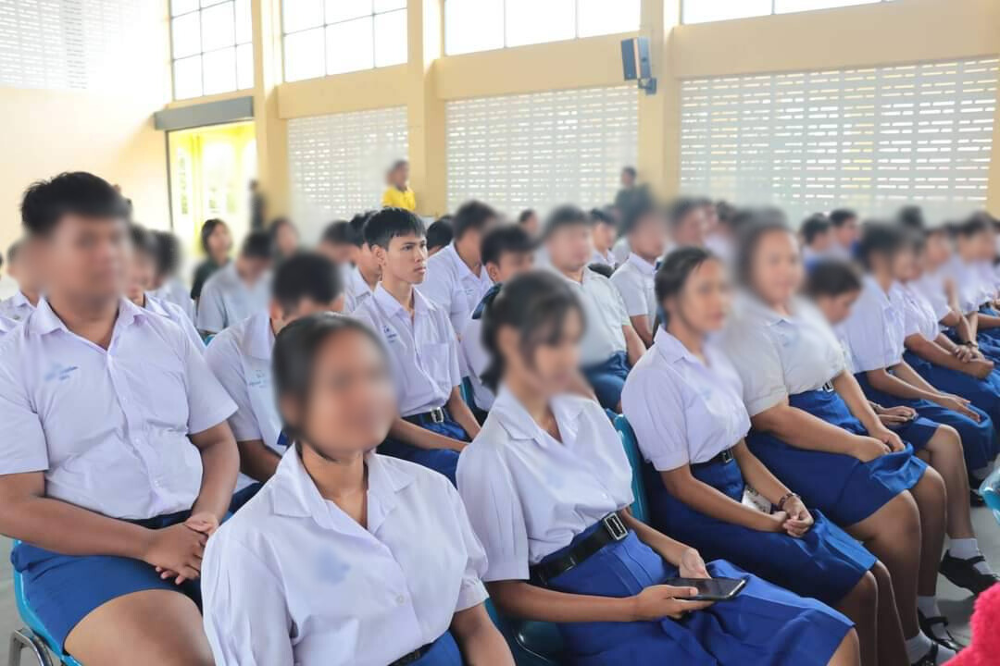
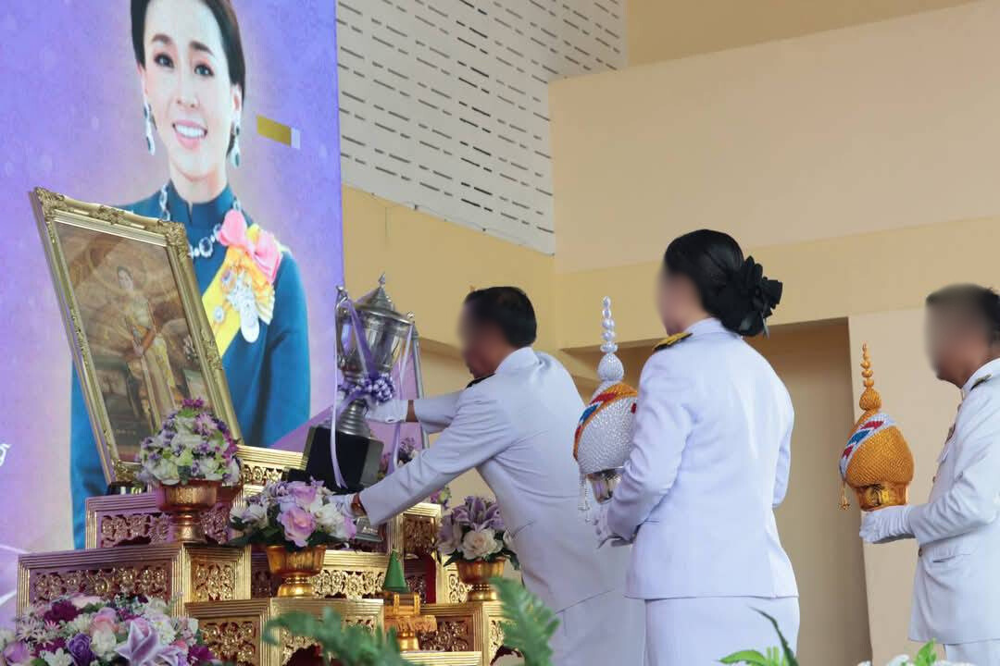
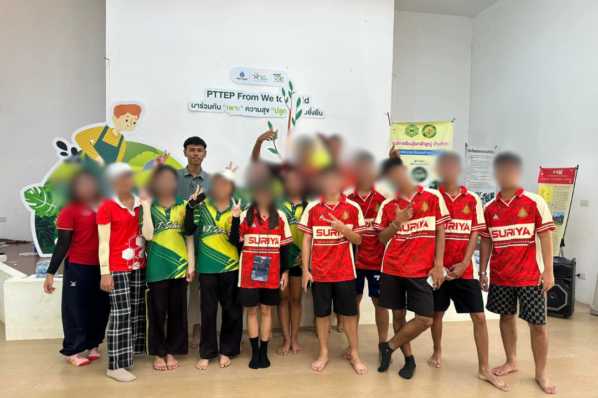
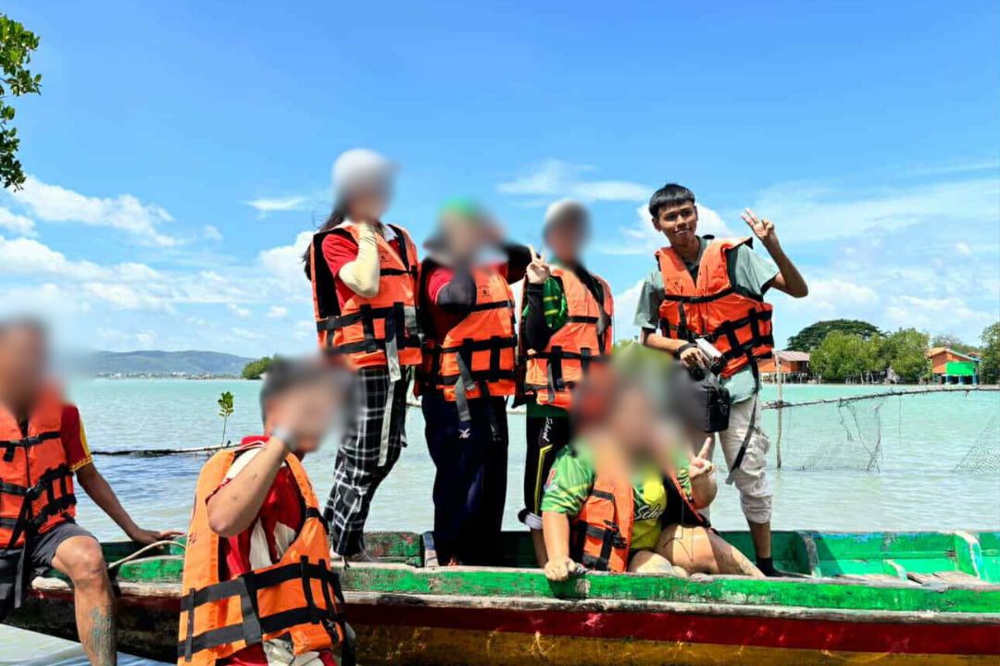
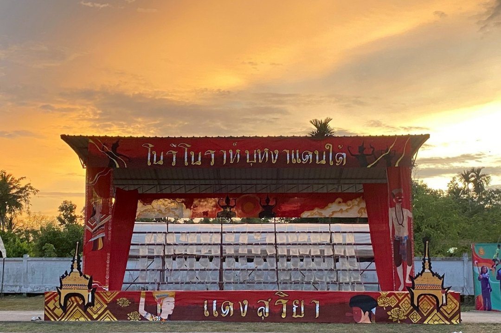
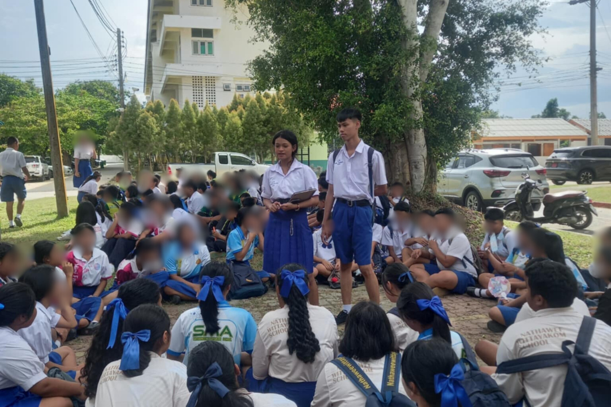
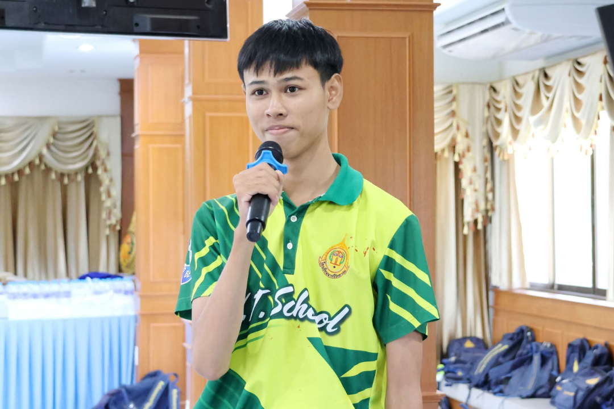
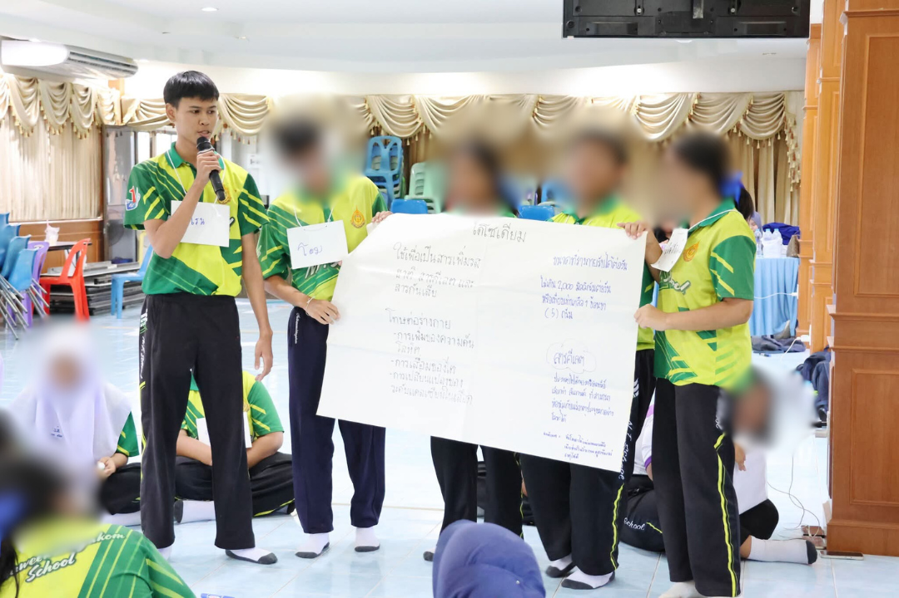
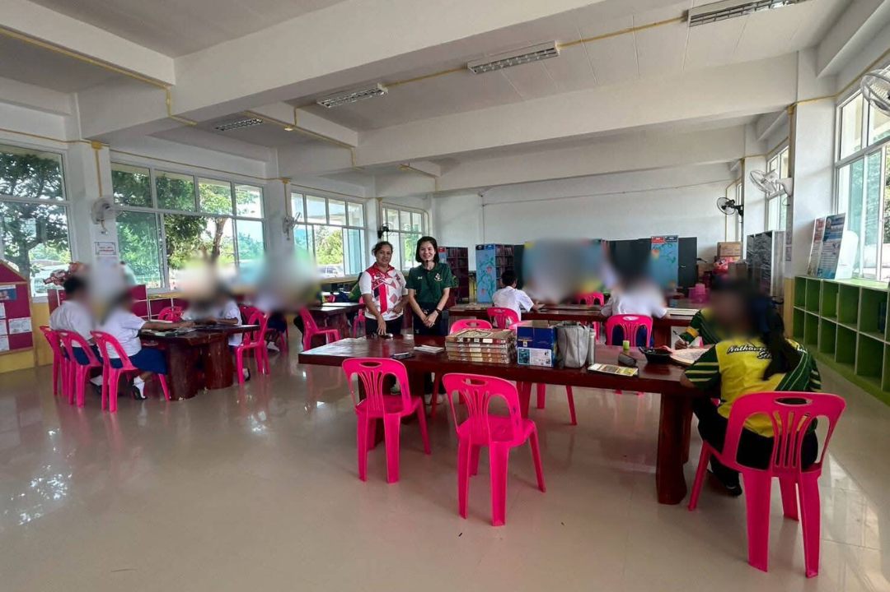
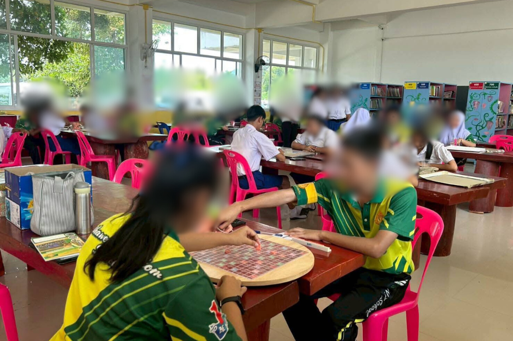

 
อัญเชิญถ้วยพระราชทาน
กระผมได้ถูกรับเลือกเป็นตัวแทนห้อง 10 คน เข้าร่วมกิจกรรมอัญเชิญถ้วยพระราชทานทำให้กระผมได้รับทักษะความรับผิดชอบ
การตรงต่อเวลา ความสามัคคี การทำงานร่วมกับผู้อื่น และกระผมมีความรู้สึกภาคภูมิใจที่ได้เป็นตัวแทนห้องในกิจกรรมสำคัญนี้
 
ปลูกป่าชายเลน
กระผมได้เข้าร่วมโครงการปลูกป่าชายเลน ซึ่งทำให้กระผมตระหนักรู้ว่าการปลูกป่าชายเลนนั้นมีประโยชน์ต่อสิ่งแวดล้อมเป็นอย่างมาก เพราะช่วยป้องกันการกัดเซาะชายฝั่ง
และเป็นแหล่งที่อยู่อาศัยของสัตว์น้ำ ทำให้กระผมเห็นความสำคัญของการรักษาธรรมชาติและอยากมีส่วนร่วมในการอนุรักษ์สิ่งแวดล้อมมากขึ้น
 
กีฬาสี
กระผมได้ถูกรับเลือกให้รับหน้าที่เป็น รองประธานฝ่ายศิลป์ ในกิจกรรมกีฬาสีของโรงเรียน โดยที่กระผม ประธานฝ่ายศิลป์และคนอื่นๆช่วยกันออกแบบสแตนเชียร์
พร็อพขบวนพาเหรด ไม้ดรัมเมเยอร์ จนสามารถคว้าความสวยงามสแตนเชียร์ ลำดับที่ 2 ได้ ซึ่งกิจกรรมนี้ทำให้กระผมได้รับทักษะ การวางแผนงาน การแก้ปัญหาเฉพาะหน้า
การใช้ความคิดสร้างสรรค์ การทำงานร่วมกับผู้อื่น
 
อบรมเสริมสร้างความรู้ด้านสุขภาพ
กระผมได้เข้าร่วมค่ายลูกเสือสามัญรุ่นใหญ่ ซึ่งทำให้กระผมได้เรียนรู้ทักษะการเอาตัวรอดในป่า การทำอาหาร การตั้งแคมป์ และการทำงานเป็นทีม
นอกจากนี้ยังได้ฝึกวินัยและความรับผิดชอบต่อหน้าที่ ทำให้กระผมมีความมั่นใจในตัวเองมากขึ้น
 
แข่งขันต่อศัพท์ภาษาไทย
กระผมได้เข้าแข่งขันต่อศัพท์ภาษาไทย ซึ่งทำให้ได้ฝึกใช้คำภาษาไทย ทั้งการสะกดคำและการเลือกใช้คำให้เหมาะกับสถานการณ์
รวมถึงการคิดคำต่ออย่างรวดเร็วภายใต้เวลาที่จำกัด ส่งผลให้กระผมพัฒนาทักษะด้านสมาธิ ความจำ และการแก้ปัญหาเฉพาะหน้าได้ดียิ่งขึ้น